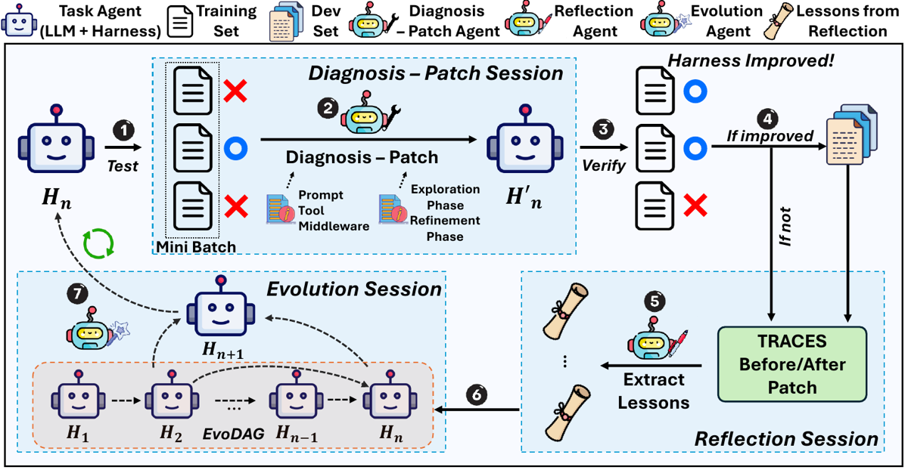
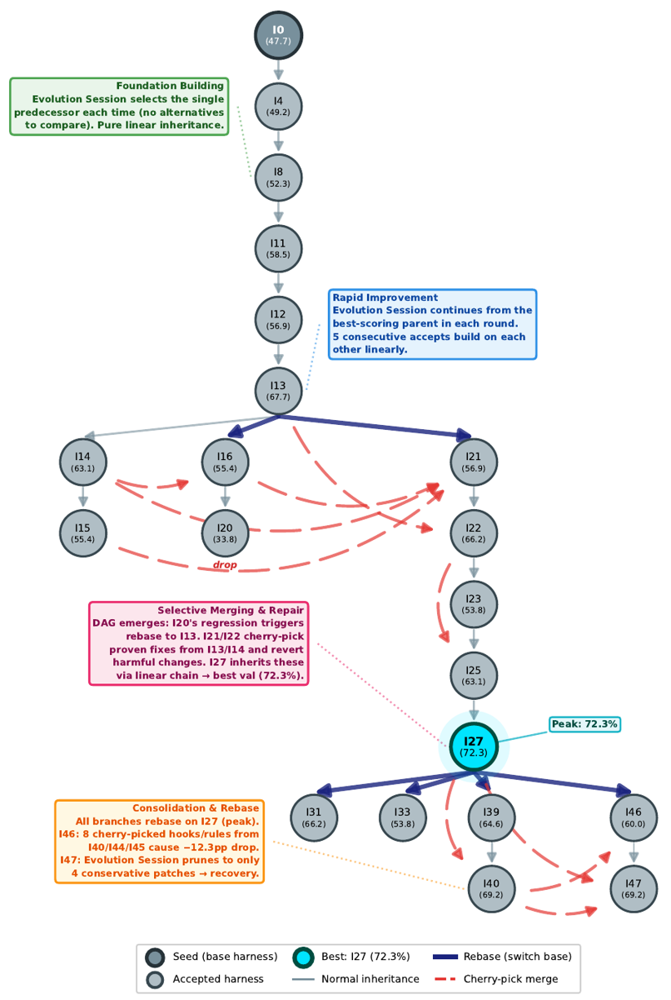
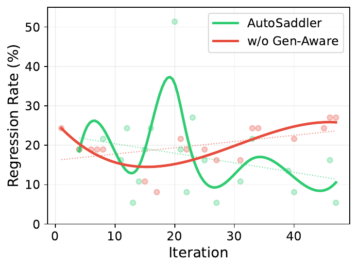

Profondeur A (grille complète 0–9). Première passe en B, reprise en A pour les sections 5 (failure modes — motif principal de la reprise), 6 (infra & coût) et 8 (figures). La section 4 est adaptée : aucun entraînement de poids dans ce papier, elle décrit la boucle d'optimisation comme boucle expérimentale. Ajout d'une annexe : les
SKILL.mddu dépôt, qui contiennent la méthodologie de diagnostic absente du papier.Deux points durs à garder en tête tout au long du mémo : 1. « Durable » au sens fort — le correctif tient-il N itérations plus tard ? — est dans le titre, demandé dans le prompt de la session Evolution, et jamais mesuré. Ce qui est mesuré est la non-régression au moment du patch, et le fix rate est calculé in-sample, sur le mini-batch qui a produit le patch. 2. L'optimiseur lit les rationales du juge GAIA2 (Llama-3.3-70B) pendant 50 itérations, avec le même juge sur train, dev et test, sans aucun audit de judge-gaming. Seuls SBP et TB2 (exécution de tests) échappent à cette critique.
TL;DR. AutoSaddler traite le harness d'un agent LLM (prompts + outils + middleware) comme du code, et l'optimise hors-ligne par une boucle mini-batch : diagnostic en profondeur des traces d'échec → patch structuré → vérification sur le même mini-batch → gate de généralisation sur un dev set → réflexion stockée dans un DAG d'évolution (EvoDAG) qui sert de mémoire d'optimiseur.
Claim principal. Sur trois benchmarks agentiques, avec Claude Opus 4.6 comme backbone, le harness optimisé automatiquement bat le harness de base de +9,0 pp (GAIA2, 53,0 → 62,0), +9,6 pp (SWE-Bench Pro, 37,3 → 46,9) et +10,0 pp (Terminal-Bench 2.0, 40,0 → 50,0) en Pass@1 sur des splits test disjoints par groupe de tâches, et bat la meilleure baseline automatique (GEPA ou Meta-Harness) de +7,4 / +4,4 / +6,7 pp [Abstract, §1, Tab. 2, Tab. 3]. Le claim secondaire, porté par les ablations, est que trois ingrédients sont nécessaires : diagnostic profond, intervention structurée, sélection consciente de la généralisation.
⚠️ Nature du papier. Ce n'est pas un papier de RL sur les poids : aucun gradient, aucun GRPO/PPO, aucun reward model. C'est de la recherche symbolique sur les paramètres textuels/exécutables externes au modèle, explicitement mise en correspondance avec l'apprentissage mini-batch [App. A, Tab. 4]. Pour une revue « environnements RL », il compte comme un papier ENV côté harness : il décrit ce qui est optimisable dans un harness, et surtout comment mesurer qu'une modification ne casse rien.
Le titre met « durable » en avant. Le papier n'en donne pas de définition formelle unique ; la notion est opérationnalisée à trois niveaux, dont deux seulement sont mesurés. J'ai relevé les 17 occurrences de « durab* » dans le source.
| Sens | Où | Mesuré ? | Métrique |
|---|---|---|---|
| (a) Durabilité locale = le patch répare sans casser ce qui marchait | App. H (Patch Durability Analysis) [§1113–1195] | oui | fix rate / regression rate sur le même mini-batch d'entraînement, avant/après patch |
| (b) Durabilité distributionnelle = l'amélioration tient hors du mini-batch qui l'a motivée | §4.3 RQ3, Fig. 6 | oui | fix rate sur les scénarios échoués par le harness de base, regression rate sur ceux réussis par le base, suivis sur le dev set au fil des itérations |
| (c) Durabilité temporelle = le correctif tient encore N itérations plus tard dans la lignée | uniquement dans le prompt de la session Evolution : « Which patches fixed scenarios that stayed fixed in subsequent iterations (durable fixes vs. fragile ones)? » [Fig. 15, Étape 1] | non | aucune |
⚠️ Le sens (c) — le seul qui soit vraiment temporel, et donc celui que le mot « durable » suggère — est demandé à l'agent d'évolution mais jamais quantifié par les auteurs. Aucune courbe « un scénario réparé à l'itération i est-il encore réparé à l'itération i+k ». C'est l'écart principal entre le titre et le contenu.
⚠️ Attention aussi au bruit terminologique : le README du dépôt emploie « durable execution » dans un sens systèmes totalement différent (« append-only events, immutable provenance, resumable state, content-addressed candidates »), absent du papier. Ne pas confondre les deux.
Le résultat le plus net du papier — et le plus transférable — est App. H, Tab. 9 : la nature mécanistique de l'intervention prédit la durabilité mieux que le composant édité.
Par composant [Tab. 8] — aucune séparation nette :
| Catégorie | Fix rate | Regression rate |
|---|---|---|
| Prompt | 59 % | 14 % |
| Tool | 57 % | 19 % |
| Middleware | 57 % | 14 % |
Par mécanisme [Tab. 9] — séparation nette :
| Type | Fix rate | Regression rate |
|---|---|---|
| Steering Patch (édition textuelle : règles de prompt, docstrings d'outils, textes de hook) | 58 % | 17 % |
| Capability Patch (code exécutable / logique d'orchestration : nouvel outil, fix d'implémentation, arguments, infra, agent loop) | 55 % | 8 % |
Lecture. À taux de réparation quasi identique (−3 pp), le patch capacitaire régresse deux fois moins (−9 pp de regression rate). Les auteurs affirment que « les interventions au niveau capacité tendent à produire des updates plus durables, tandis que le steering textuel est plus susceptible de déborder hors de son périmètre » [App. H]. C'est la définition opératoire retenue : durable = même pouvoir de réparation, périmètre d'effet plus étroit.
⚠️ Mon évaluation, trois réserves sur cette mesure. 1. Fix rate et regression rate sont calculés sur le mini-batch qui a servi à générer le patch [App. H, première phrase]. Le fix rate est donc in-sample et structurellement gonflé (le patch a été écrit pour ces scénarios) ; seul le regression rate est un signal quasi hors-échantillon, puisque les scénarios « passants » n'étaient pas ciblés. Le contraste 17 % vs 8 % reste donc valable, le 58 % vs 55 % beaucoup moins. 2. La réévaluation post-patch est une seule exécution d'un agent stochastique. Un flip PASS→FAIL peut être du bruit. Le papier le sait : le prompt de Reflection impose un « stochasticity check » obligatoire et interdit d'attribuer un changement d'état au bruit sans preuve tracée [Fig. 14, Étape 3, « Classification criteria »]. Mais c'est un LLM qui arbitre la causalité, pas un ré-échantillonnage. Aucune mesure de la précision de cet arbitrage. Un taux de faux « TRUE FIX » de 15–20 % suffirait à brouiller l'écart 55/58 %. 3. Le biais de sélection joue dans le bon sens pour l'argument mais pas pour l'estimation : les Capability Patches sont concentrés dans la phase Exploration (itérations 1–25 sur GAIA2) et les Steering dans la phase Refinement (26–50) [Fig. 8]. Le harness est plus mûr en fin de run, donc plus fragile à perturber. L'écart 17 % vs 8 % confond partiellement mécanisme et moment du run. Aucune ablation ne dissocie les deux.
argmax du score dev parmi les candidats évalués sur dev [§2]. Sur GAIA2 : 21 des 51 candidats ont atteint l'étage dev [App. K].fixed / regressed / still_failing / still_passing) sont enregistrés par scénario, avec --generalization-note qui relie explicitement le résultat mini-batch au score dev [Fig. 14, Étape 5].Preuve que ce gate sert à quelque chose [§4.3 RQ3] : l'ablation w/o Generalization-Aware Selection atteint un fix rate comparable (Fig. 6a) mais un regression rate divergent (Fig. 6b) — tendance −0,24 pp/itération pour AutoSaddler vs +0,16 pp/itération pour l'ablation. C'est la plus forte chute de toutes les ablations : 62,0 → 50,6 sur le test GAIA2 [Tab. 2]. Autrement dit : la capacité à réparer n'est pas le facteur discriminant ; la capacité à ne pas casser l'est.
Important. Ici les « tâches » ne sont pas les données d'un entraînement de poids : ce sont les instances de benchmark qui servent de jeu d'entraînement à l'optimiseur de harness. Aucune donnée n'est générée ni annotée.
| Benchmark | Axe de split | Train | Dev | Test |
|---|---|---|---|---|
| GAIA2 | Universe (persona) |
Universe 29 — 75 | Universe 30 — 65 | Universes 21 (107), 22 (112), 27 (81) = 300 |
| SWE-Bench Pro | dépôt (et donc langage) | qutebrowser (Python) — 79 |
Vuls (Go) 40 + NodeBB (JS) 40 = 80 |
Ansible (Py) 96, Flipt (Go) 85, Element-web (TS) 56 = 237 |
| Terminal-Bench 2.0 | aléatoire | 30 | 19 | 40 |
history-analysis, diagnose, capability-patch, steering-patch, patch-verification) et des trois prompts de session [App. M] — non précisé en heures. ⚠️ C'est un coût réel et masqué : la méthode déplace l'effort humain du tuning du harness vers le tuning du méta-harness.Il y a deux harness superposés dans ce papier. Les distinguer est indispensable.
| Catégorie | Sous-type | C/S | Description |
|---|---|---|---|
| Prompt | Prompt Rule Addition | S | Ajouter ou modifier des règles comportementales dans le system prompt |
| Prompt | Prompt Rule Modification | S | Réviser des règles existantes pour résoudre des conflits ou affiner la guidance |
| Tool | New Tool Addition | C | Ajouter un outil quand aucun existant ne supporte l'action requise |
| Tool | Argument Modification | C | Ajouter/corriger des paramètres d'outil pour améliorer filtrage ou sélection |
| Tool | Implementation Fix | C | Corriger des bugs ou étendre la fonctionnalité interne d'un outil |
| Tool | Tool Description Fix | S | Modifier les docstrings pour éviter le mésusage d'outil |
| Middleware | PreToolUse Hook | S | Injecter un rappel just-in-time avant un appel d'outil spécifique |
| Middleware | Infrastructure Change | C | Modifier la config de l'agent, le budget d'itérations, les réglages d'environnement |
| Middleware | Agent Loop Logic Change | C | Ajouter des étapes de préproc. ou des rappels de budget dans l'agent loop |
are-run, chaque tâche dans son Universe sandboxé, trajectoire complète enregistrée [App. B]. SBP : image Docker par instance, dépôt au commit de l'issue. TB2 : Harbor, un conteneur Docker isolé par tâche [App. B].get_crime_rates_batch pour « consolider des requêtes sérielles et réduire substantiellement la consommation du budget de pas » [App. J].evo-dag CLI » [App. B]. L'accès se fait par retrieval progressif via CLI, ce qui « mitige les défis de long-contexte posés par les longues trajectoires d'agent » [§3]. Le papier positionne explicitement cela contre les méthodes de diagnostic antérieures qui « assument que les traces tiennent dans la fenêtre de contexte » [§2, Related Work].evo-dag [Tab. 6], recopiée :| Commande | Rôle |
|---|---|
evo-dag summary |
Topologie du DAG, meilleur candidat, toutes les arêtes |
evo-dag show history |
Historique complet des patches : diffs, réflexions, leçons |
evo-dag show node <idx> |
Scores, intent, verdict, répertoires de sortie d'un candidat |
evo-dag show edge <parent> <child> |
Diff de code, impacts par scénario, fichiers modifiés |
evo-dag show scenario <id> |
Historique par scénario, root causes, correctifs tentés |
evo-dag show current-batch |
IDs et répertoires du mini-batch courant |
evo-dag show lineage |
Lignée du DAG avec types d'arêtes |
evo-dag show lessons |
Bons/mauvais patterns accumulés |
evo-dag update-selection |
Écrit : candidats parents retenus + raisonnement |
evo-dag update-intent |
Écrit : scénarios ciblés, diagnostic, approche, fichiers changés, résumé |
evo-dag update-reflection |
Écrit : statut par scénario, root cause, explication, prévention, note de généralisation |
Plus les outils natifs CA-SDK : Read, Write, Edit, MultiEdit, Grep, Bash [App. I].
rsync -a --exclude='.git' ; cherry-pick au niveau diff, explicitement préféré à la copie de fichier (« Whole-file copies bring unintended changes ») [Fig. 15, Étape 4].patch-verification obligatoire après toute modification, dans la session Diagnosis-Patch et dans la session Evolution. « A patch that crashes at runtime is worse than no patch », « A broken base codebase will cause every subsequent session to fail » [Fig. 13 Étape 4, Fig. 15 Étape 5]. Vérifie syntaxe, imports, docstrings, hooks, logique. ⚠️ C'est un garde-fou à coût quasi nul dont le papier ne mesure jamais le taux de déclenchement — non précisé.Tâche file-management : l'agent devait localiser le répertoire
benchmarksexistant sousDocuments/avant d'y créersims3. Il a créébenchmarks/sims3/à la racine du filesystem sans vérifier oùbenchmarksse trouve. — Diagnostic superficiel : « l'agent a utilisé un chemin relatif incorrect alors qu'il savait que benchmarks est sous Documents/ » → incohérent avec le comportement réel (l'agent n'a jamais vérifié) ; patch réactif proposé : faire émettre un avertissement àmkdirquand le parent est nouvellement créé. — Diagnostic AutoSaddler : inspecte la trace, observe que l'agent a appeléexists("benchmarks/sims3")puis immédiatementmkdirsur le même chemin sans chercher la vraie localisation, croise avec la structure réelle du filesystem, conclut à l'absence de vérification du répertoire parent ; patch : résolution de chemin automatique dansexecute_tool_call(), « éliminant le mauvais placement silencieux à la source ». [Fig. 10]
Ce qu'il faut retenir de cet exemple : le diagnostic superficiel produit un correctif plausible mais réactif (un warning), le diagnostic profond produit un correctif capacitaire à la source. C'est exactement la différence Steering/Capability qui explique l'écart de regression rate de §H.
Il faut distinguer deux vérifieurs : celui qui juge une tâche, et le critère qui juge une variante de harness.
| Benchmark | Vérifieur | Granularité |
|---|---|---|
| GAIA2 | LLM-as-judge : Llama-3.3-70B-Instruct, protocole officiel GAIA2, juge le succès à partir de l'état final de l'agent [App. B] |
binaire par scénario |
| SWE-Bench Pro | exécution de tests dans un Docker par instance : résolu ssi tous les tests fail-to-pass passent et aucun test pass-to-pass ne régresse [App. B] | binaire, avec garde anti-régression intégrée |
| Terminal-Bench 2.0 | script de test par tâche via Harbor, inspecte l'état final du terminal et du système [App. B] | binaire |
C'est ici que se joue la conception, et elle est à trois seuils emboîtés :
somme(scores réévaluation) > somme(scores initiaux) sur le même mini-batch. Recopié du prompt : « Acceptance: A patch is accepted if the sum of re-evaluation scores exceeds the sum of initial scores. Even fixing a single scenario is enough. However, regressions (passing → failing) are recorded as bad patterns — avoid them. » [Fig. 13]. ⚠️ Seuil strictement > 0, sans marge. Avec un mini-batch de ~3 scénarios et une exécution unique, une amélioration de +1 scénario est indiscernable du bruit. Le prompt compense en décourageant les régressions plutôt qu'en les interdisant — elles sont enregistrées comme bad patterns mais ne bloquent pas l'acceptation.argmax du score dev parmi les candidats évalués sur dev [§2].bad_patterns, and false fixes accumulate noise in good_patterns. Both degrade the quality of lessons for future iterations. »
⚠️ C'est le composant le plus intéressant et le moins validé du papier. C'est un LLM qui décide si un effet est causal, sur la base d'une comparaison de traces et du diff. Sa précision n'est jamais mesurée — ni contre des humains, ni contre la vérité obtenue par ré-échantillonnage (ré-exécuter le scénario k fois avant et après aurait donné une réponse empirique). C'est le maillon faible de toute la chaîne de « durabilité ».Aucun entraînement de poids, à aucune étape : pas de gradient, pas de GRPO/PPO/RLOO/DPO, pas de reward model, pas de KL, pas de température de sampling rapportée côté policy. Les paramètres optimisés sont textuels et exécutables, explicitement « non-différentiables » [App. A]. Cette section décrit donc la boucle d'optimisation comme boucle expérimentale.
Pour chaque itération n, jusqu'à épuisement du budget K :
1. Échantillonner un mini-batch (B_n \subset D_{\text{train}}) ; exécuter (H_n) dessus, collecter scores et traces.
2. Session Diagnosis-Patch — diagnostiquer les échecs, générer un patch structuré (\Delta\theta_n), produire (H'n = H_n + \Delta\theta_n).
3. Réévaluer (H'_n) sur le même (B_n).
4. Si (\widehat{J}(H'n) > \widehat{J}(H_n)) → évaluer (H'n) sur (D}).
5. Session Reflection — comparer traces avant/après, classer chaque scénario en fixed/regressed/still_failing/still_passing, statuer TRUE vs STOCHASTIC.
6. Écrire patch + métriques + leçons dans l'EvoDAG.
7. Session Evolution — synthétiser (H_{n+1}) depuis le DAG (continuer / changer de parent / recombiner), en révoquant les régressions.
Retour final : argmax du score dev parmi les candidats évalués sur dev. Le test set est évalué une seule fois, sans rétroaction [§3].
| Paramètre | Valeur | Source |
|---|---|---|
| Backbone optimiseur et task agent | Claude Opus 4.6, réglages d'endpoint par défaut |
§4.1 |
| Température, top-p, seed du LLM | non précisé | — |
| Budget d'epochs | 2 (GAIA2, SBP) · 4 (TB2, pour compenser un train set ~2× plus petit) | App. B |
| Itérations (GAIA2) | 50 (2 epochs × 25) | App. K |
| Taille de mini-batch B | non précisé explicitement ⚠️ voir ci-dessous | — |
| Exécutions de tâches par itération | 6 | App. L |
| Taille du dev set (GAIA2) | 65 scénarios, déclenché uniquement sur acceptation | App. L |
| Répétitions (R_i) pendant l'optimisation | 1 | §2, §4.1 |
| Répétitions à l'évaluation test | 3 | §4.1 |
| Transition de phase k | (k = E\lceil | D_{\text{train}} |
| Patches générés / rejetés / acceptés (GAIA2) | 39 / 19 / 20 | Tab. 10 |
| Candidats totaux / évalués sur dev | 51 / 21 | App. K, Fig. 9 |
⚠️ Incohérence sur la taille de mini-batch. App. L écrit « AutoSaddler evaluates six training scenarios per optimization iteration ». Mais 50 itérations = 2 epochs sur un train set de 75 tâches impose 25 itérations/epoch, donc B = 3. La lecture qui réconcilie tout : B = 3 scénarios, 6 exécutions par itération (3 avant patch + 3 après patch). C'est mon inférence, pas une affirmation des auteurs — le papier ne donne jamais B en clair. Elle est cohérente avec 25 × 3 = 75 exactement.
⚠️ Conséquence, et c'est le point faible de la boucle : le critère d'acceptation est un seuil strictement > 0 sur une somme de 3 scores binaires évalués une seule fois. Réparer 1 scénario sur 3, avec un agent stochastique et sans répétition, est à peine distinguable du bruit. Le papier compense en aval (gate dev, réflexion causale) plutôt qu'en amont (marge, répétitions). Pour un portage, c'est le premier paramètre que je changerais.
Il n'y a ni KL ni clipping, mais la boucle contient leurs analogues fonctionnels. Correspondance revendiquée par les auteurs [Tab. 4, App. A] et mon commentaire :
| Mécanisme RL usuel | Analogue dans AutoSaddler | Mon évaluation |
|---|---|---|
| Gradient | diagnostic → patch-comme-intervention → vérification même-batch | ⚠️ « gradient textuel » inféré, sémantique et faillible, d'où la vérification obligatoire — les auteurs le disent eux-mêmes [App. A] |
| État d'optimiseur / momentum | EvoDAG (patches + scores + leçons accumulés) | Analogie défendable : le DAG lisse le bruit et oriente vers les directions historiquement productives |
| Learning-rate schedule | Phased Patch Scheduling (Capability → Steering) | Les auteurs qualifient l'analogie d'« approximative » et d'« heuristique de scheduling » — honnête. Vaut −5,9 pp si retiré [Tab. 6] |
| Checkpointing / early stopping | gate dev + argmax dev final |
C'est le mécanisme dominant (−11,4 pp si retiré) |
| Contrainte de proximité (KL) | taxonomie des patches + surface d'édition restreinte + « prefer replacement over addition » | Régularisation par le prompt, non par l'objectif. ⚠️ Donc non garantie : rien n'empêche mécaniquement un patch massif — cf. Iter46, §5 |
| Trust region / rollback | révocation des régressions + cherry-pick au niveau diff en session Evolution | Pas d'analogue RL direct ; c'est plus puissant qu'un rollback, car sélectif ligne à ligne |
⚠️ Une différence structurelle avec le RL qui mérite d'être notée : l'ordre Step 5 / Step 6 est inversé par rapport à l'entraînement classique. La validation dev précède l'update de l'état d'optimiseur, « because EvoDAG is part of the optimizer state. Once a misleading lesson is stored, it can influence future evolution » [App. A]. Autrement dit, la mémoire de l'optimiseur est elle-même sujette à empoisonnement, et le gate sert autant à protéger la mémoire qu'à sélectionner le candidat. C'est un problème qui n'a pas d'équivalent en RL sur les poids, et qui en a un très direct en juridique dès qu'on accumule des « leçons » ou une mémoire d'agent.
Pas de courbe de reward ni d'entropie — ces notions n'existent pas ici. Trois dynamiques sont rapportées : - Score dev vs itération [Fig. 9] : quatre phases (Foundation → Rapid Improvement → Selective Merging & Repair → Consolidation & Rebase), non monotone, avec deux effondrements et deux récupérations. - Score dev vs budget de rollouts [Fig. 1, Fig. 7] : AutoSaddler domine GEPA et Meta-Harness à budget égal sur GAIA2 et TB2. - Patches acceptés cumulés [Fig. 12] : 20 vs 15 pour l'ablation sans diagnostic profond. - Longueur des réponses / du prompt système : non mesurée. ⚠️ Lacune réelle : la phase Refinement accumule des règles de prompt et l'échec d'Iter46 est explicitement attribué à un « collective steering overhead ». Une courbe « taille du prompt système vs score dev » aurait été le diagnostic direct de ce phénomène, et elle manque.
Section la plus riche du papier, et paradoxalement celle qu'il ne revendique pas : les failure modes sont documentés comme démonstrations du bon fonctionnement des garde-fous, pas comme un catalogue. Ils en constituent pourtant un.
C'est le cas le plus précieux du papier pour notre revue, et il est rare dans la littérature. Le même pattern de patch apparaît dans les deux bras de l'ablation, et se termine différemment selon que le mécanisme de réflexion est présent ou non.
send_progress_message_to_user et modification du hook de l'outil très utilisé send_message_to_user pour rediriger de force l'agent vers le nouvel outil [§4.3 RQ3]. Bras AutoSaddler, Iter4 : un hook calendaire se déclenche indistinctement sur toutes les créations d'événement [Fig. 8b, App. I].Ce que ce cas établit. Que le mécanisme de réflexion + gate dev peut intercepter un patch qui améliore son mini-batch tout en dégradant la distribution — et que ce type de patch apparaît spontanément dans les deux bras, donc qu'il est une propriété de la recherche, pas un accident de seed. La trajectoire du regression rate diverge ensuite dans la direction prédite (−0,24 vs +0,16 pp/iter), et le résultat terminal est franc : 50,6 % vs 62,0 % sur le test, l'ablation tombant sous le harness de base (53,0 %).
Ce que ce cas n'établit pas. ⚠️ Il faut être précis, parce que c'est tentant de sur-lire :
- n = 1 de chaque côté. Un cas dans chaque bras, sur un seul benchmark, sur un seul run d'optimisation. Ce n'est pas un contrôle apparié au sens statistique : les deux patches diffèrent (hook calendaire vs redirection de send_message_to_user), les itérations diffèrent (4 vs 20), et l'état du harness diffère.
- La contrefactuelle n'est pas testée. Personne n'a laissé passer le patch d'Iter4 dans le bras AutoSaddler pour vérifier qu'il aurait bien causé une régression. L'affirmation « il aurait nui » repose sur le jugement de l'agent de réflexion, pas sur une mesure.
- Le blocage n'est pas attribué à un mécanisme unique. L'ablation retire à la fois la réflexion et le filtrage dev ; c'est l'ablation fine [Tab. 6] qui montre que le filtrage dev pèse le plus (−10,7 pp) et la réflexion+EvoDAG le reste (−5,1 pp). Le texte de RQ3 attribue pourtant le blocage à « la réflexion », ce que la décomposition ne soutient qu'en partie.
- Et le bras AutoSaddler s'est quand même effondré plus tard (Iter20, Iter46 — ci-dessous). Le garde-fou réduit la fréquence des catastrophes, il ne les élimine pas.
bad_patterns, and false fixes accumulate noise in good_patterns. Both degrade the quality of lessons for future iterations » [Fig. 14].Trois cas appariés, où le diagnostic superficiel produit une hypothèse plausible mais fausse [App. I, Fig. 9/10/11] :
| Cas | Diagnostic superficiel | Vrai root cause (diagnostic profond) | Correction retenue |
|---|---|---|---|
| Calendrier, annulations ambiguës | « l'agent a mal compris l'instruction » → classé erreur de raisonnement LLM, patching contourné | Ambiguïté linguistique du singulier « the event » ; plusieurs annulations les 2 et 6 nov. | Hook calendaire + règle de prompt de gestion d'ambiguïté |
Déplacement de PNG vers sims3 |
« chemin relatif incorrect » — incohérent avec la trace, l'agent n'a jamais vérifié | Absence de vérification du répertoire parent avant mkdir/mv |
Résolution de chemin automatique dans execute_tool_call() |
| Réservation de VTC, 2 trajets candidats | diagnostic centré sur l'identification des contacts et le compte d'appels oracle — hors sujet | Un 2ᵉ trajet correspondant à l'index 19 n'a jamais été observé par l'agent | Nouvel outil search_ride_history avec filtres date / départ / arrivée |
⚠️ Le failure mode générique à retenir : un diagnostic superficiel ne produit pas un diagnostic vide, il produit un diagnostic confiant et faux, qui mène soit à un patch réactif inutile (un warning au lieu d'une résolution de chemin), soit — pire — à la décision de ne pas patcher (cas 1 : classé « erreur de raisonnement du LLM, rien à corriger dans le harness »). Ce dernier est le plus coûteux : il retire silencieusement une catégorie entière d'échecs du champ de l'optimisation. Transposé au droit : « le modèle a mal raisonné » est l'explication par défaut qui masque un défaut d'outillage (pas de filtre par juridiction, pas de vérification de l'état d'abrogation d'un texte).
get_crime_rates_batch, une API groupée qui consolide des requêtes sérielles et réduit la consommation du budget de pas ; Iter13 identifie un blocage d'exécution dans la logique de polling de l'environnement et le résout par une stratégie de sortie sur notification. ⚠️ Ce second cas est notable : l'optimiseur a débogué l'environnement, pas l'agent. C'est la frontière harness/environnement qui devient poreuse.capability-patch SKILL.md) ; interdiction des réponses en dur (« No hard-coded answers: do not embed task-specific answers, lookup tables, or scenario-specific logic ») ; Reflection n'a droit qu'à l'accuracy dev agrégée, jamais aux traces dev ; test évalué une seule fois.| # | Failure mode | Type de vérifieur concerné | Détection | Correction | Coût observé |
|---|---|---|---|---|---|
| 1 | Hook trop large sur outil à haute fréquence | tout vérifieur outcome | réflexion (bras complet) ou gate dev | blocage, ou rebase + cherry-pick sélectif | −33,9 pp dev (Iter20) ; +14 pp de regression rate (ablation, Iter21) |
| 2 | Sur-accumulation compositionnelle de steering | tout | gate dev uniquement sur la combinaison | élagage à N patches conservateurs | −12,3 pp dev (Iter46), récupéré à 69,2 % |
| 3 | Seuil d'acceptation mini-batch hackable | outcome binaire, mini-batch minuscule, 1 exécution | gate dev en aval | aucune correction en amont proposée | ~40 % des patches acceptés dégradent le dev (mon calcul, Fig. 9) |
| 4 | Empoisonnement de la mémoire par flips stochastiques | tout vérifieur stochastique | « stochasticity check » par LLM, non validé | marquage STOCHASTIC + consigne de ne pas sur-corriger | non mesuré ; regression rate dev oscille 5–51 % |
| 5 | Diagnostic superficiel confiant et faux | indépendant du vérifieur | comparaison avec diagnostic profond | diagnostic tracé, ancré sur code + trace | −4,2 pp de perf finale ; 20 vs 15 patches acceptés |
| 6 | Judge-gaming potentiel (GAIA2) | LLM-as-judge non validé | non testé | aucune | inconnu ⚠️ |
Le papier consacre une annexe entière à la caractérisation du coût [App. L] — c'est rare, et c'est une des sources les mieux chiffrées du corpus sur ce que coûte réellement une boucle d'optimisation agentique.
Côté optimiseur, par patch généré [Tab. 10] :
| Méthode | Générés | Rejetés | Acceptés | s/patch | \$/patch | Appels LLM/patch | Tokens out/patch | Cache-creation in/patch | Cache-read in/patch |
|---|---|---|---|---|---|---|---|---|---|
| GEPA | 76 | 58 | 18 | 386 | 5,50 | 21,3 | 11 416 | 156 788 | 280 940 |
| Meta-Harness | 20 | — | — | 883 | 12,65 | 66,9 | 43 429 | 250 466 | 3 528 484 |
| AutoSaddler | 39 | 19 | 20 | 533 | 14,56 | 76,1 | 21 464 | 430 933 | 3 246 158 |
Côté task agent, par rollout GAIA2 [Tab. 11] : 20,2 appels LLM · 550 988 tokens d'input · 7 380 tokens d'output · 203,9 s.
Comparaison par run complet sur GAIA2, à partir des deux tableaux :
| Poste | Volume | Tokens d'input | Part |
|---|---|---|---|
| Optimiseur (39 patches) | 39 × 3 677 091 tokens d'input (cache-read + cache-creation) | ≈ 1,4 × 10⁸ | ~20 % |
| Task agent (≈1 000 rollouts jusqu'au pic) | 1 000 × 550 988 | ≈ 5,5 × 10⁸ | ~80 % |
⚠️ Nuance sur mon propre calcul. En tokens d'input bruts, le rapport est de ~4×, pas de trois ordres de grandeur — je corrige ici l'ordre de grandeur que j'avais avancé en première passe. Le rapport de trois ordres de grandeur vaut pour les tokens d'output : 39 × 21 464 ≈ 8,4 × 10⁵ côté optimiseur contre 1 000 × 7 380 ≈ 7,4 × 10⁶ côté agent (facteur ~9), et surtout en coût monétaire effectif, parce que l'essentiel des tokens d'input de l'optimiseur sont des cache-read (3,25 M sur 3,68 M, soit 88 %), facturés une fraction du tarif plein, alors que les 550 988 tokens par rollout de l'agent ne bénéficient d'aucun cache déclaré.
Formulation exacte et défendable : côté optimiseur, le run complet coûte 39 × 14,56 = ≈ 568 \$ (mon calcul ; le total n'est pas donné). Côté task agent, le coût monétaire n'est pas donné du tout (aucun prix par token), mais le volume est de ≈ 5,5 × 10⁸ tokens d'input non cachés. Au tarif public d'un modèle de classe Opus, cet ordre de grandeur place l'évaluation à un ou deux ordres de grandeur au-dessus des 568 \$ d'optimiseur. La conclusion opérationnelle tient, et c'est la seule qui compte : le poste de coût à optimiser est l'évaluation, pas le raisonnement de l'optimiseur.
C'est exactement la thèse des auteurs, et leur argument le plus solide face à Meta-Harness [App. L] : payer +1,91 \$/patch d'optimiseur plus cher pour éviter des centaines de rollouts est un arbitrage massivement gagnant. Meta-Harness évalue les 140 scénarios train+dev pour chaque candidat ; AutoSaddler évalue 6 exécutions par itération et ne déclenche les 65 scénarios dev que sur acceptation. Résultat : 67,7 % dev en 391 rollouts contre 61,5 % en 1 400.
evo-dag viable ; sans cache, relire l'historique à chaque session serait prohibitif. ⚠️ Dépendance d'infrastructure à ne pas sous-estimer pour un portage : la méthode suppose un cache de prompt efficace côté fournisseur.Non précisé : coût monétaire total d'un run · coût par rollout de task agent en \$ · tokens d'input non cachés côté optimiseur · nombre de conteneurs / niveau de parallélisme · débit de rollouts par heure · taux d'échec ou de timeout des sandbox · nombre de fois où patch-verification a rattrapé un patch qui aurait crashé (métrique gratuite et très instructive) · coûts pour SBP et TB2 (toute l'App. L est GAIA2-seulement).
| Chiffre annoncé | Où il est annoncé | Source dans le papier | Verdict |
|---|---|---|---|
| Gain GAIA2 +9,0 pp | Abstract, §1, §5 | Tab. 2 : 53,0 → 62,0 = +9,0. Moyennes pondérées par nb de tâches vérifiées : base (54,8·107 + 51,5·112 + 52,7·81)/300 = 53,0 ✓ ; AutoSaddler = 62,0 ✓ | confirmé |
| Gain SWE-Bench Pro +9,6 pp | Abstract, §1, §5 | Tab. 3 : 37,3 → 46,9 = +9,6 ✓ (moy. pondérées recalculées : 37,27 et 46,86) | confirmé |
| Gain SBP « +8,4 pp (37,3 % → 46,9 %) » | §4.2, corps du texte | Les deux valeurs citées dans la même phrase donnent +9,6, pas +8,4 | contredit — 8,4 (texte §4.2) vs 9,6 (abstract, §1, §5, Tab. 3, README du dépôt). ⚠️ Erreur arithmétique dans le corps ; l'abstract a raison |
| Gain TB2 +10,0 pp | Abstract, §1, §4.2, §5 | Tab. 3 : 40,0 → 50,0 ✓ | confirmé |
| Écart à la meilleure baseline auto : 7,4 / 4,4 / 6,7 (GAIA2 / SBP / TB2) | §1, §5 | Tab. 2 : 62,0 − 54,6 (GEPA) = 7,4 ✓ ; Tab. 3 : 46,9 − 42,5 (GEPA) = 4,4 ✓ ; 50,0 − 43,3 (Meta-Harness) = 6,7 ✓ | confirmé |
| « +6,2 pp sur SBP (42,5 vs 46,9) » et « +4,4 pp sur TB2 (43,3 vs 50,0) » | §4.2, corps du texte | Les valeurs entre parenthèses donnent 4,4 (SBP) et 6,7 (TB2). Le texte intervertit et falsifie les deux écarts | contredit — le corps §4.2 est faux sur les trois chiffres de gain ; l'abstract, §1, §5 et les tableaux sont cohérents entre eux |
| « surpasse le harness expert manuel Terminus KIRA de +2,5 pp (47,5 % vs 50,0 %) » | §4.2 | Tab. 3 : Terminus KIRA 47,5(25), AutoSaddler Iter34 50,0(0) → +2,5 ✓ | confirmé ⚠️ mais 47,5 ± 2,5 vs 50,0 ± 0,0 sur 40 tâches : l'écart vaut 1 σ, non significatif |
| 72,3 % dev accuracy avec ~1 000 exécutions de tâches | Fig. 1a, §4.2 | App. K : pic global de 72,3 % à Iter27 ✓. Le chiffre de ~1 000 rollouts n'est lisible que sur la figure | confirmé (le pic ; le budget associé repose sur la figure seule) |
| GEPA et Meta-Harness saturent à 64,6 % et 61,5 % avec ~2 800 exécutions | Fig. 1a, §4.2 | App. L confirme le 61,5 % de Meta-Harness ; 64,6 % GEPA et les ~2 800 exécutions ne figurent que sur Fig. 1a | confirmé (partiellement sourcé hors figure) |
| 147 traces exploitées, ~10× moins que Meta-Harness (1 400) | Fig. 1b, §4.2 | 1 400 / 147 = 9,5 ≈ 10× ✓ ; le 1 400 est recoupé par App. L | confirmé |
| 67,7 % dev après 391 rollouts, dépassant le pic 61,5 % de Meta-Harness à 1 400 rollouts | §4.2, App. L | App. K : « culminating at Iter13 (67,7 %) » ✓ ; cohérent avec App. L | confirmé |
| TB2 : 73,7 % dev après 31 exécutions et 12 traces, vs Meta-Harness 63,2 % et GEPA 57,9 % ; ~8× moins de traces (98) | App. I (§optimization_efficiency) | 98/12 = 8,2 ≈ 8× ✓ ; point de départ commun 52,6 % | confirmé |
| Transfert cross-model +5,6 pp (Haiku 4.5) | §4.2, App. E | Tab. 5 : 30,0 → 35,6 = +5,6 ✓ | confirmé |
| Run d'optimisation indépendant : 58,6 % ; train set différent : 57,4 % (+5,9 pp) | §4.2, App. C, App. D | Tab. 4 : 58,6(05) ✓ ; Tab. 5 : 57,4(21), base 51,5 → +5,9 ✓ | confirmé ⚠️ mais ces deux nombres portent sur Universe 22 seul, pas sur la moyenne des trois univers de test — présentés en §4.2 sans cette précision |
| Ablations GAIA2 : 62,0 → 57,8 / 56,9 / 50,6 | §4.3 | Tab. 2 ✓ pour les trois | confirmé |
| Ablations fines : phase scheduling 60,7 → 54,8 ; dev-set filtering 60,7 → 50,0 ; +taxonomie → 53,3 ; +Reflection/EvoDAG → 44,9 | §4.3, App. G | Tab. 6 ✓ pour les quatre | confirmé ⚠️ sur-généralisé : le texte de §4.3 juxtapose ces chiffres (base Universe 22 seul, 60,7 %) avec ceux de Tab. 2 (moyenne 3 univers, 62,0 %) sans signaler le changement de référentiel. Deux échelles différentes dans le même paragraphe |
| Diagnostic profond : +6,2 appels d'outils et +5,8 accès fichiers par step | §4.3 RQ1, App. I | Tab. 10 : 69,7 − 63,5 = 6,2 ✓ ; 45,5 − 39,7 = 5,8 ✓ | confirmé ⚠️ mon évaluation : +6,2 appels sur 63,5 (+9,8 %) est un delta faible pour justifier une différence de 4,2 pp de performance. L'argument « le diagnostic est substantiellement plus profond » est mal soutenu par cette métrique |
| Patches acceptés : 13 vs 5 à la fin de l'Epoch 1, « avantage maintenu » en Epoch 2 | §4.3 RQ1 | Fig. 12 (caption) : totaux 20 vs 15 | confirmé mais trompeur ⚠️ l'écart passe de 8 à 5 entre fin Epoch 1 et fin de run : l'ablation rattrape. « maintained » est littéralement vrai, directionnellement discutable |
| Sans intervention structurée, les patches se concentrent à 91,5 % sur le Steering ; les types à forte valeur passent de 4 % à >25 % | §4.3 RQ2 | Fig. 4 ; taux d'acceptation New Tool 83 %, Loop Change 71 %, Infra Change 67 % [Fig. 4c] | confirmé (repose entièrement sur les figures ; aucun tableau) |
| Capability vs Steering : fix 55 % vs 58 %, régression 8 % vs 17 % | §4.3, App. H | Tab. 9 ✓ | confirmé |
| Tendances de régression −0,24 pp/iter vs +0,16 pp/iter | §4.3 RQ3 | Fig. 6b ; les coefficients n'apparaissent que dans le texte | introuvable hors texte — aucune table, aucun IC, aucune méthode de régression précisée. ⚠️ Et la figure affaiblit le claim : inspection de rq3_dev_regression_rate.png (§8) — les pentes sont des ajustements linéaires sur ~15 points extrêmement dispersés (5 % à 51 %), les deux droites se croisent vers l'itération 22, et le pire point du run est un point AutoSaddler (≈51 % vers Iter13) |
| Gain cumulé 24,6 pp sur la trajectoire dev GAIA2 | App. J (Fig. 8) | Aucun texte ne donne le score dev de départ ; il est lisible sur la Fig. 9 (nœud racine I0 (47,7)). 72,3 − 47,7 = 24,6 ✓ |
confirmé — mais uniquement via une figure d'une autre annexe ; aucun texte du papier n'énonce la valeur dev du harness de base |
| Coût optimiseur 14,56 \$/patch, +1,91 \$ vs Meta-Harness, −39,6 % de wall-clock (533 s vs 883 s) | App. L | Tab. 10 : 14,56 − 12,65 = 1,91 ✓ ; 1 − 533/883 = 39,6 % ✓ | confirmé |
Bilan 7.0. L'abstract, l'introduction, la conclusion, les tableaux et le README du dépôt sont mutuellement cohérents. Le §4.2 (Main Results) est faux sur les trois chiffres de gain relatif qu'il énonce (8,4 au lieu de 9,6 ; 6,2 et 4,4 au lieu de 4,4 et 6,7, avec interversion). Deux valeurs (pentes de régression, score dev de base) sont introuvables hors du texte courant. Deux passages mélangent silencieusement « moyenne 3 univers » et « Universe 22 seul ». → case coherence = fausse.
GAIA2, Pass@1 test, moyenne ± écart-type sur 3 exécutions [Tab. 2] :
| Harness | U21 (107) | U22 (112) | U27 (81) | Moy. |
|---|---|---|---|---|
| Default Agent (manuel) | 54,8 ± 4,8 | 51,5 ± 4,9 | 52,7 ± 4,3 | 53,0 ± 1,5 |
| GEPA (auto) | 60,1 ± 3,9 | 47,9 ± 3,4 | 56,4 ± 0,7 | 54,6 ± 2,5 |
| Meta-Harness (auto) | 53,0 ± 1,1 | 51,5 ± 5,2 | 56,0 ± 0,7 | 53,2 ± 2,2 |
| AutoSaddler (auto) | 61,4 ± 2,4 | 60,7 ± 2,4 | 64,6 ± 3,1 | 62,0 ± 1,2 |
| w/o In-depth Diagnosis | 56,7 ± 4,2 | 57,1 ± 3,9 | 60,1 ± 5,0 | 57,8 ± 3,8 |
| w/o Structured Intervention | 58,9 ± 2,5 | 53,3 ± 7,6 | 59,3 ± 3,3 | 56,9 ± 3,8 |
| w/o Generalization-Aware Selection | 53,3 ± 1,9 | 44,9 ± 6,7 | 54,7 ± 4,0 | 50,6 ± 4,0 |
SWE-Bench Pro [Tab. 3] :
| Harness | Ansible (96) | Flipt (85) | Element-web (56) | Moy. |
|---|---|---|---|---|
| SWE-agent (manuel) | 40,6 ± 1,9 | 31,0 ± 3,5 | 41,1 ± 1,7 | 37,3 ± 4,8 |
| GEPA | 50,0 ± 1,3 | 32,2 ± 1,4 | 45,2 ± 0,6 | 42,5 ± 1,2 |
| Meta-Harness | 36,9 ± 2,9 | 31,3 ± 1,7 | 38,7 ± 0,8 | 35,3 ± 2,0 |
| AutoSaddler | 58,0 ± 1,8 | 36,5 ± 1,8 | 43,5 ± 1,6 | 46,9 ± 1,8 |
⚠️ Le gain SBP est très inégal : +17,4 pp sur Ansible (Python, même langage que le train qutebrowser), +5,5 pp sur Flipt (Go), +2,4 pp sur Element-web (TypeScript) — où GEPA fait mieux. La généralisation cross-langage est donc nettement plus faible que la moyenne ne le suggère, et le papier ne le commente pas.
Terminal-Bench 2.0, test split (40 tâches) [Tab. 3] : Terminus 2 40,0 ± 0,0 · Terminus KIRA (expert manuel) 47,5 ± 2,5 · GEPA 42,5 ± 2,5 · Meta-Harness 43,3 ± 5,8 · AutoSaddler Iter2 45,0 ± 0,0 · AutoSaddler Iter34 50,0 ± 0,0. ⚠️ Un σ de 0,0 sur 3 exécutions de 40 tâches avec un agent stochastique est surprenant ; non commenté.
C'est le point fort méthodologique du papier. Les deux colonnes existent.
| In-distribution (dev, groupes vus) | Out-of-distribution (test, groupes disjoints) | |
|---|---|---|
| GAIA2 | base 47,7 % → pic 72,3 % sur Universe 30, soit +24,6 pp [Fig. 9 nœud I0, App. J, App. K] |
62,0 % sur Universes 21/22/27 vs base 53,0 % → +9,0 pp |
| SWE-Bench Pro | dev = Vuls + NodeBB, scores dev non rapportés |
46,9 % sur Ansible/Flipt/Element-web vs 37,3 % → +9,6 pp, mais +17,4 / +5,5 / +2,4 pp selon le langage |
| Terminal-Bench 2.0 | 73,7 % sur le dev (19 tâches) depuis 52,6 % [App. I] | ⚠️ split test aléatoire — le test TB2 n'est pas OOD au sens des deux autres. 50,0 % vs 40,0 % |
Écart ID → OOD sur GAIA2, en niveau : 72,3 % dev vs 62,0 % test, soit −10,3 pp. Le papier ne calcule ni ne commente cet écart ; c'est pourtant la mesure directe de ce que coûte la généralisation hors-groupe.
⚠️ Formulation plus dure, en gain plutôt qu'en niveau — maintenant que la Fig. 9 donne le point de départ dev (47,7 %) : le gain in-distribution est de +24,6 pp, le gain hors-groupe de +9,0 pp. Seuls ~37 % du gain d'optimisation survivent au franchissement de la frontière de groupe. C'est le chiffre que je retiendrais pour dimensionner les attentes d'un transfert au juridique — et le papier ne l'énonce nulle part, parce qu'il ne met jamais les deux trajectoires côte à côte.
Autres axes de généralisation mesurés : - Cross-model [Tab. 5] : harness optimisé avec Opus 4.6, redéployé sur Haiku 4.5 → 30,0 → 35,6 %, +5,6 pp. AutoSaddler domine toutes les baselines et ablations sur les trois univers. ⚠️ Le gain relatif se maintient (+19 % relatif vs +17 % relatif sous Opus), ce qui est un signal encourageant : le harness encode des correctifs structurels, pas des béquilles spécifiques à un modèle. - Stochasticité de l'optimiseur [Tab. 4] : second run indépendant → 58,6 % sur U22 vs 60,7 % (run 1), vs base 51,5 %. Les auteurs reconnaissent que « two optimization trajectories are insufficient for a comprehensive statistical characterization ». - Décalage de distribution d'entraînement [Tab. 5] : entraîner sur Universe 24 au lieu de 29 → 57,4 % sur U22, à 1,2 pt du run 2. - Transfert entre benchmarks : non mesuré, et structurellement impossible — les harnesses sont spécifiques à leur codebase de base (ARE, SWE-agent, Terminus 2). Aucune leçon abstraite n'est transférée d'un benchmark à l'autre. ⚠️ C'est la limite la plus importante pour un usage industriel : la méthode ré-optimise à zéro pour chaque couple (harness, domaine).
Classement par impact sur GAIA2 (moyenne 3 univers) [Tab. 2] :
| Ingrédient retiré | Chute | Rang |
|---|---|---|
| Generalization-Aware Selection | 62,0 → 50,6 (−11,4 pp) | 1er — et tombe sous le harness de base (53,0) |
| Structured Intervention | 62,0 → 56,9 (−5,1 pp) | 2e |
| In-depth Diagnosis | 62,0 → 57,8 (−4,2 pp) | 3e |
Décomposition fine (sur U22 seul, base AutoSaddler = 60,7) [Tab. 6] : dev-set filtering −10,7 pp (60,7 → 50,0), puis Reflection+EvoDAG −5,1 pp supplémentaires (→ 44,9) ; phase scheduling −5,9 pp (→ 54,8), puis taxonomie −1,5 pp (→ 53,3).
Conclusion des ablations, très nette : le gate de généralisation est l'ingrédient dominant, et de loin. Sans lui, l'optimisation automatique est activement nuisible (50,6 < 53,0 du harness de base, et 44,9 < 51,5 sur U22). Le diagnostic profond, qui est pourtant le composant le plus coûteux et le plus mis en avant dans le titre du RQ1, est le moins déterminant des trois.
Côté optimiseur, par patch généré [Tab. 10] :
| Méthode | Patches générés | Rejetés | Acceptés | s/patch | \$/patch | Appels LLM/patch | Tokens out/patch | Cache-creation in/patch | Cache-read in/patch |
|---|---|---|---|---|---|---|---|---|---|
| GEPA | 76 | 58 | 18 | 386 | 5,50 | 21,3 | 11 416 | 156 788 | 280 940 |
| Meta-Harness | 20 | — | — | 883 | 12,65 | 66,9 | 43 429 | 250 466 | 3 528 484 |
| AutoSaddler | 39 | 19 | 20 | 533 | 14,56 | 76,1 | 21 464 | 430 933 | 3 246 158 |
Côté task agent, par rollout GAIA2 [Tab. 11] : 20,2 appels LLM · 550 988 tokens d'input · 7 380 tokens d'output · 203,9 s. Coût monétaire par rollout : non précisé.
Arbitrage central, tel que les auteurs le posent : AutoSaddler est plus cher par patch (+1,91 \$ vs Meta-Harness) mais beaucoup plus économe en rollouts, parce que l'évaluation dev (65 scénarios) n'est déclenchée que par les patches ayant passé le seuil mini-batch. Meta-Harness évalue les 140 scénarios train+dev pour chaque candidat. Résultat : 67,7 % dev en 391 rollouts contre 61,5 % en 1 400.
⚠️ Chiffres que le papier ne donne pas, et mes reconstitutions explicites : - Coût optimiseur total d'un run GAIA2 : non précisé. Mon calcul : 39 × 14,56 = ≈ 568 \$. - Coût total en rollouts du run complet (50 itérations) : non précisé. Fig. 1a suggère ~1 000 rollouts pour atteindre le pic ; à 550 988 tokens d'input par rollout, cela représente ≈ 5,5 × 10⁸ tokens d'input côté task agent, contre ≈ 1,4 × 10⁸ côté optimiseur — mais dont 88 % sont des cache-read. L'essentiel du coût réel est l'évaluation, pas l'optimisation ; décomposition complète et bornes défendables en §6.2. - Tokens d'input non cachés côté optimiseur : non précisé (seuls cache-creation et cache-read sont donnés). - Wall-clock total d'un run : non précisé. Mon ordre de grandeur, séquentiel : 1 000 × 203,9 s ≈ 57 h de rollouts, + 39 × 533 s ≈ 5,8 h d'optimiseur. Le parallélisme des rollouts n'est pas décrit (pas de §infra dédiée).
github.com/microsoft/AutoSaddler, licence MIT, vérifié par HTTP le 2026-09-29 : dépôt public, src/autosaddler, configs/{datasets,v1,v2}, scripts, tests, docs, uv.lock, 232 stars, dernier push 2026-09-25, support V2 ajouté pour le harness Meta-ARE. Les trois benchmarks sont publics et sous licence permissive. Les trois prompts de session complets sont en annexe [App. M]. ⚠️ Les skills (diagnose, capability-patch, …) sont référencés comme .claude/skills/<n>/SKILL.md mais leur contenu n'est pas dans le papier — à récupérer depuis le dépôt.Calcul de l'evidence : baselines ✅ · ablation ✅ · variance ✅ · coherence ❌ · eval ❌ · repro ✅ → evidence = 4/6, evidence_manquant: [coherence, eval]. Aucune case n.a. (papier empirique standard).
Solide sur le mécanisme, à répliquer sur la magnitude. La direction du résultat est très bien soutenue : trois benchmarks, trois harnesses de base, des splits hors-groupe honnêtes, des baselines appariées en budget, des ablations qui convergent, du code publié, et — sur SBP et TB2 — des vérifieurs par exécution de tests non hackables par mise en forme. L'ablation la plus informative (sans gate de généralisation, l'optimisation automatique détériore le harness de base) est un résultat robuste et important.
Les valeurs exactes sont plus fragiles : erreurs arithmétiques dans le corps, n = 1 run d'optimisation pour les chiffres principaux, écart 72,3 → 62,0 dev→test non discuté, gain SBP dominé par le dépôt qui partage le langage du train set, juge GAIA2 non validé alors que l'optimiseur voit ses rationales. Et surtout : le sens le plus fort du mot « durable » (le correctif tient-il dans le temps ?) est revendiqué dans le titre, demandé dans les prompts, et jamais mesuré.
Trois figures retenues sur les 18 disponibles dans papers/2608.23041/figs/ (existence des fichiers vérifiée) : le schéma de la méthode, puis les deux figures qui documentent les effondrements.

Ce qu'il faut voir : les sept étapes numérotées ➀–➆ et, surtout, où sont placés les deux seuils. ➂ vérifie sur le même mini-batch (seuil à > 0, hackable — cf. §5.2) ; ➃ n'est déclenché que si ➂ passe, et c'est ce déclenchement conditionnel qui fait toute l'économie de rollouts (§6.2). Noter que ➄ réflexion s'exécute que le patch soit accepté ou non, et que ➅ EvoDAG est à la fois mémoire et état d'optimiseur — d'où l'inversion Step 5 / Step 6 par rapport à l'entraînement classique (§4).
Ce qu'il faut voir : c'est la figure la plus informative du papier, et elle est enterrée en App. K. - Le nœud racineI0 (47,7) donne le score dev du harness de base — valeur énoncée nulle part dans le texte, et qui seule permet de calculer le gain in-distribution (+24,6 pp) et de le comparer au gain hors-groupe (+9,0 pp) : seuls ~37 % du gain survivent au changement de groupe (§7).
- I20 (33,8), étiqueté drop : l'effondrement de −33,9 pp depuis I13 (67,7), causé par un hook sur un outil à haute fréquence. Le patch avait passé le seuil mini-batch.
- I46 (60,0) puis I47 (69,2) : la chute de −12,3 pp par sur-accumulation de huit hooks cherry-pickés, et la récupération par élagage à quatre patches.
- Les arêtes rouges en pointillés (cherry-pick) et bleues épaisses (rebase) : c'est ce qui fait un DAG et non une chaîne, et c'est le mécanisme de récupération.
- ⚠️ Ce que la figure révèle contre le papier : en comptant les transitions parent→enfant, au moins 8 des 20 patches acceptés font baisser le score dev (I13→I14, I14→I15, I13→I16, I16→I20, I13→I21, I22→I23, I27→I33, I27→I46). ~40 % de faux positifs du seuil d'acceptation — chiffre que les auteurs ne calculent jamais.

Ce qu'il faut voir : la figure qui porte le claim central de RQ3 (−0,24 vs +0,16 pp/iter) — et qui le fragilise quand on la regarde vraiment. - Les deux droites en pointillés sont les tendances citées dans le texte ; elles se croisent vers l'itération 22 et leur séparation est portée par les extrémités. - Les points sont extrêmement dispersés : de ~5 % à ~51 % de regression rate d'une itération à l'autre, sur ~15 points par bras. Aucun intervalle de confiance, aucune méthode de régression précisée. - ⚠️ Le pire point du run est un point AutoSaddler (≈51 %, vers Iter13), et la courbe lissée verte dépasse la rouge autour des itérations 17–22. - Ce que la figure établit malgré tout : la dispersion elle-même est le résultat — elle mesure le bruit du vérifieur, et donne sa vraie taille au problème du §5.4 (contamination de la mémoire par des flips stochastiques). Le claim de tendance est faible ; le claim terminal reste solide (62,0 vs 50,6 sur le test, l'ablation passant sous le harness de base).| Ingrédient | Choix du papier | Équivalent juridique | Transfert | Ce qui manque |
|---|---|---|---|---|
| Source des tâches | 75–79 tâches de benchmark existantes, aucune création, aucun filtrage [Tab. 7] | 75–150 requêtes Harvey LAB / Vals annotées, ou tâches construites à partir de mémos internes clôturés | direct — le volume requis est étonnamment faible, c'est l'argument le plus encourageant du papier pour le juridique | Rien de bloquant. Un split par juridiction / domaine de droit / cabinet à la place de « Universe » ou « dépôt » |
| Split hors-groupe | Univers (persona) ou dépôt (+langage) disjoints entre train/dev/test [App. B] | Train = droit des contrats ; dev = droit social ; test = droit fiscal + procédure + une seconde juridiction | direct — c'est le choix de design le plus immédiatement copiable, et il protège contre le sur-ajustement au domaine | Rien. À faire dès le premier jour, avant toute autre chose |
| Vérifieur | Pass@1 binaire : juge LLM (GAIA2) ou exécution de tests (SBP, TB2) [App. B] | Pas d'équivalent aux tests unitaires. Reste : rubriques d'expert, vérification de citations, conformité de structure | adaptable, avec le point dur ici | Un μ à crédit partiel et fiable. Le papier ne résout pas ce problème — il l'hérite des benchmarks. Les auteurs l'identifient explicitement comme la limitation n°1 [App. O] |
| Critère d'acceptation | Seuil mini-batch strict somme après > somme avant + gate dev à 65 scénarios [Fig. 13, §3] |
Identique, mais avec marge : exiger un delta supérieur au bruit de mesure, pas > 0 | adaptable | Avec une rubrique continue et bruitée, le seuil nu est inutilisable. Il faut k ré-exécutions et un test de significativité |
| Harness / outils | prompt + outils + middleware, 9 sous-types, édition de code sous git worktree, patch-verification obligatoire [Tab. 1, Fig. 15] |
Prompts de recherche juridique, outils de recherche (base de jurisprudence, filtres par juridiction/date), hooks de vérification de citation, logique de boucle | direct — la taxonomie en 9 sous-types se transpose quasi telle quelle ; « Argument Modification » ↔ ajouter un filtre juridiction/date à l'outil de recherche | Rien de conceptuel. L'ingénierie du sandbox de recherche juridique |
| Algo | Recherche symbolique mini-batch, pas de gradient, 2 epochs, ~39 patches, ~1 000 rollouts [§3, App. L] | Identique — et applicable immédiatement, sans toucher aux poids de Gemini | direct | Rien. C'est le gros avantage pratique : zéro dépendance au post-training |
| Curriculum | Phased scheduling : Capability (1 epoch) puis Steering [App. A] | Phase 1 : outils de recherche, filtres, vérificateur de citations, boucle. Phase 2 : règles de prompt sur le style d'argumentation, le hedging, la structure | direct — et l'ablation le chiffre à −5,9 pp [Tab. 6] | Rien |
| Anti-hacking | Accès interdit au code d'éval et aux données de benchmark ; Reflection n'a droit qu'à l'accuracy dev agrégée, jamais aux traces dev [§3, Fig. 14] | Interdire à l'optimiseur de voir la rubrique d'évaluation, les réponses de référence et les traces dev ; ne lui rendre que le score agrégé | direct, et impératif | Le juge juridique sera un LLM. Il faut en plus un juge de test distinct du juge de dev/train — précaution que ce papier ne prend pas, et qui est sa faiblesse d'éval |
Le gate de généralisation à deux étages, et la comptabilité fix rate / regression rate qui va avec.
Justification chiffrée : c'est la seule composante dont l'ablation fait passer la méthode sous le harness de base (50,6 vs 53,0 en moyenne ; 44,9 vs 51,5 sur U22) [Tab. 2, Tab. 6]. Autrement dit, l'optimisation automatique d'un harness sans gate de généralisation est pire que ne rien faire. Pour Gemini Law, cela se traduit par une règle de conduite directement actionnable : toute modification du prompt système ou de l'outillage juridique doit être mesurée non pas sur « combien de cas ça répare » mais sur « combien de cas déjà corrects ça casse », sur un jeu de domaines disjoint de celui qui a motivé le changement.
Le corollaire — Capability 8 % de régression vs Steering 17 %, à fix rate égal [Tab. 9] — est le second enseignement transférable, et il est contre-intuitif pour une équipe de post-training : ajouter une règle au system prompt est l'intervention qui a le plus d'effets de bord, pas la moins risquée. En droit, où le prompt système porte déjà les garde-fous déontologiques, le hedging, les règles de citation et les instructions de format, cet effet devrait être amplifié : chaque règle ajoutée dilue les précédentes (« the system prompt has a finite attention budget » [Fig. 13]). La conséquence pratique : privilégier un outil de vérification de citations ou un filtre de juridiction plutôt qu'une nouvelle règle de prompt, à bénéfice affiché égal.
Troisième ingrédient, moins visible mais très utile : la réflexion obligatoire même sur les patches rejetés [§3]. Un échec documenté avec sa cause coûte un appel LLM et évite de le retenter 20 itérations plus tard. Sur un domaine où chaque évaluation coûte du temps d'expert, la valeur de ce mécanisme est bien plus élevée qu'ici.
Objectif : tester si le gate de généralisation et la hiérarchie Capability > Steering tiennent quand le vérifieur est une rubrique bruitée plutôt qu'un test unitaire — c'est-à-dire exactement le régime juridique, et exactement ce que le papier n'a pas testé.
Protocole, calibré sur les budgets réels du papier : 1. Data : ~150 tâches de recherche juridique réparties par domaine en train (1 domaine, ~50) / dev (1 domaine, ~50) / test (2 domaines + 1 juridiction secondaire, ~50). Split hors-groupe strict, à la GAIA2/SBP. 2. μ : rubrique à 4–6 critères notés par un juge LLM A (correction juridique, exactitude des citations, couverture, structure), plus un vérificateur déterministe de citations (existence, juridiction, date) qui donne un sous-score non hackable — l'analogue des tests fail-to-pass de SBP. Score continu, k = 3 ré-exécutions par tâche pendant l'optimisation, contrairement au papier qui n'en fait qu'une. 3. Harness : le scaffold de recherche juridique existant, exposé en code, éval et rubriques hors du périmètre éditable. 4. Boucle : AutoSaddler tel quel (code MIT disponible), mini-batch ~5, 2 epochs, seuil d'acceptation avec marge (delta > 1 σ du bruit à k = 3 plutôt que > 0), gate dev sur les 50 tâches du domaine dev. 5. Éval finale : juge LLM B ≠ A sur le test set, plus une revue experte sur un échantillon de 30 tâches, pour détecter le judge-gaming que le papier n'a pas cherché. 6. Mesures clés : (i) fix rate / regression rate par type de patch, pour vérifier l'écart 8 %/17 % ; (ii) écart dev → test, à comparer aux −10,3 pp de GAIA2 ; (iii) delta entre juge A et juge B sur le test.
Coût estimé, par extrapolation des tableaux [Tab. 10, Tab. 11] : ~40 patches × 14,56 \$ ≈ 600 \$ d'optimiseur, et 1 000–3 000 rollouts de task agent (le facteur 3 vient de k = 3) — soit l'essentiel de la facture, comme dans le papier. Ordre de grandeur : quelques milliers de dollars et quelques jours de wall-clock avec parallélisation. Négligeable comparé à un run de RL sur les poids — c'est l'argument décisif pour le faire en premier.
Résultat attendu. Je m'attends à ce que le gain absolu soit nettement inférieur aux +9 pp du papier : le signal est plus bruité (rubrique vs tests), l'écart dev→test devrait dépasser 10 pp, et le seuil d'acceptation nu produirait surtout du bruit — d'où la marge imposée. Je m'attends en revanche à ce que la hiérarchie Capability > Steering se renforce : le sous-score de vérification de citations est réparable par un outil (vérificateur déterministe, filtre de juridiction) et très mal réparable par une règle de prompt. Le signal d'échec qui invaliderait l'approche : un gain sous juge A qui disparaît sous juge B — ce serait la preuve que la boucle optimise le juge et non le droit, et cela condamnerait l'usage d'un μ purement LLM pour ce type d'optimisation.
Le harness de Gemini Law est-il traité comme un artefact versionné, mesuré et soumis à un gate de non-régression — ou comme un prompt que l'on édite à la main entre deux runs de RL ? Concrètement : existe-t-il, pour chaque modification du prompt système ou de l'outillage juridique, un regression rate mesuré sur un jeu de domaines disjoint ? Ce papier montre qu'en l'absence de ce gate, l'optimisation automatique du scaffold dégrade la performance sous le point de départ [Tab. 2], et que l'intervention perçue comme la plus anodine — ajouter une règle au prompt — est celle qui régresse le plus [Tab. 9].
Sous-question, plus pointue et directement liée à notre setup : quand on fera du RL sur les poids, contre quel harness ? Ce papier montre qu'à modèle figé, le harness vaut ~9–10 pp sur trois domaines. Si le harness dérive pendant le post-training, on ne saura pas attribuer les gains. Deux options à trancher : geler le harness pendant le RL et l'optimiser ensuite, ou alterner les deux. AutoSaddler ne tranche pas — il cite la question en related work [§2, hebbar2026sia, chen2026co] sans l'explorer, et son propre setup suppose le backbone figé. → Traité ailleurs dans le dossier : SIA (2605.27276) et Co-Harness (2607.22688), désormais dans le corpus. Mémo à renvoyer vers eux plutôt qu'à spéculer ici ; la synthèse envs.md devra confronter les trois.
SKILL.md du dépôt (hors papier)⚠️ Provenance : ces contenus ne sont PAS dans le papier. Ils sont récupérés de github.com/microsoft/AutoSaddler le 2026-09-29, chemin src/autosaddler/v1/proposer/autosaddler/skills/<nom>/SKILL.md (la branche v1 correspond au papier ; une branche v2 existe pour le plugin Meta-ARE, ajoutée après la soumission). Le papier les référence comme obligatoires et donne leur ordre d'appel [App. M], mais n'en publie pas le contenu — or c'est la méthodologie opératoire, et la partie la plus directement copiable.
SKILL.md ajoutent par rapport au papier1. diagnose (4,4 ko) — une procédure de root-cause en 6 étapes, absente du papier. Le papier dit « diagnostic profond » ; le skill dit comment. Le cœur est une chaîne causale explicite à trois termes :
« Trace the code path: what the agent saw (docstring/prompt) → what it decided (trace reasoning) → what happened (tool implementation). »
Et une grille de documentation par scénario en quatre points : what happened (séquence exacte d'actions) · why it happened (le chemin de code) · what should have happened (l'oracle) · where the gap is — « le décalage précis entre le modèle du monde de l'agent et la réalité : est-il dans le comportement de l'outil, dans la compréhension qu'en a l'agent, dans sa planification, ou dans les contraintes de l'environnement ? ». Consigne explicite de ne pas s'arrêter au premier correctif possible : « the same failure can often be addressed through multiple approaches — a missing action might be fixable by adding a new tool, by improving an existing tool's output, by adding a prompt rule, or by inserting a hook reminder. Your job is to understand the full causal chain deeply enough that the patch strategy can be chosen based on which approach is most robust and generalizable ». Checklist finale en 4 points : Specific / Causal / Actionable / Unique (distinct des tentatives déjà échouées sur ce scénario).
⚠️ C'est la pièce manquante du papier. Le RQ1 mesure la profondeur du diagnostic par un proxy faible (+6,2 appels d'outils, +5,8 accès fichiers — soit +10 %). Le vrai mécanisme est ici : une taxonomie de localisation de la faute (outil / texte sur l'outil / raisonnement / environnement) qui force à choisir la couche de correction. C'est directement transposable au juridique : l'agent a-t-il échoué parce que l'outil de recherche ne filtre pas par juridiction (capacité), parce que sa docstring ne dit pas qu'il ne couvre pas les arrêts d'appel (texte), ou parce qu'il a mal raisonné (rien à patcher) ?
2. capability-patch (8,1 ko) — une table root-cause → signal de trace → exemple, et des « trace signals » opérationnels. Le papier donne la taxonomie [Tab. 1] ; le skill donne les symptômes observables dans une trace qui déclenchent chaque type de patch. Extraits recopiés :
| Type de patch | Trace signals (recopiés) |
|---|---|
| New Tool Addition | « Agent cannot perform the required action at all » · « tries workarounds, wastes steps, or gives up » · « calls the same tool many times in a loop with different parameters » · « exhausts iteration budget on repetitive operations » |
| Argument Modification | « needs to filter/search by a field that isn't exposed as a parameter » · « fetches all results and manually filters in the reasoning loop » · « passes a parameter value that the tool doesn't accept » |
| Implementation Fix | « Tool returns wrong results, empty results, or crashes » · « works for common cases but fails on edge cases » · « return format doesn't match what the docstring promises » |
| Infrastructure Change | « hits the iteration limit with task still incomplete » · « runtime errors, state corruption, or configuration mismatches » |
| Agent Loop Logic Change | « exhausts iterations without attempting to wrap up » · « starts tasks without awareness of the environment state » · « repeatedly forgets constraints that should be reinforced at runtime » |
Plus une Safety Assessment en 5 points avant tout commit : history check · scenario check · dependencies (« use grep to find all references before modifying a shared function ») · PASS scenario impact (« will this change affect behavior for scenarios that are currently passing? ») · reversibility (« can this be cleanly reverted if it causes regressions? »). Et trois contraintes dures : « No hard-coded answers » · « No protected-path modifications: never modify evaluation, judging, ground truth, or benchmark infrastructure » · « No cross-worktree edits ».
3. steering-patch (6,7 ko) — les règles de rédaction qui expliquent le résultat 17 % vs 8 %. C'est ici, et nulle part dans le papier, qu'on trouve la doctrine anti-débordement. Recopié :
- « Keep rules abstract — no scenario IDs, specific names, or hardcoded answers »
- « Prefer replacement over addition (the prompt has a finite attention budget): can you update an existing rule? Can two related rules be merged? »
- « Use conditional phrasing like "When X, prefer Y" instead of "NEVER do X" — absolute directives can suppress valid behaviors »
- « Verify no conflicts: re-read all existing rules, check for contradictions. If a conflict exists, consider a PreToolUse hook instead (more targeted, less interference) »
Et pour les hooks : « Match the exact tool that needs the hint » · « Keep messages concise (under 2 sentences) » · « Use conditional language: "If the task requires X" rather than absolute directives » · « State facts about constraints rather than prescribing alternatives (e.g., "this tool cannot do X" rather than "use tool Y instead") ». Avec la distinction de portée énoncée explicitement : « Prompt rules are always in context and affect every scenario — use PreToolUse hooks instead when the guidance applies only to a specific tool. »
⚠️ Ces quatre lignes sont, à mon sens, le contenu le plus précieux récupéré. Elles expliquent mécaniquement le résultat de la Tab. 9 (Steering régresse 2× plus) et le failure mode d'Iter20 : une directive absolue sur un outil à haute fréquence supprime des comportements valides. Et elles donnent la correction générique, qui est aussi celle qu'AutoSaddler redécouvre empiriquement à Iter27 (« remplace un hook prohibitif par un template de réponse constructif ») : énoncer une contrainte factuelle plutôt que prescrire une alternative, et conditionner plutôt qu'interdire.
4. patch-verification (4,4 ko) — une procédure en 8 étapes, dont plusieurs spécifiques aux agents. Au-delà du classique (diff review, py_compile, imports, logique, intégration), trois étapes sont propres aux harnesses d'agents et valent d'être notées :
- Docstring Integrity — « Docstrings are the agent's only interface to tools — errors here directly cause agent failures ». Vérifie : pas de placeholder ([...], <placeholder>) qui « crashent les parsers en aval » · noms de paramètres cohérents avec la signature réelle · pas de doc périmée copiée-collée d'une autre méthode · pas de séquences d'échappement littérales (\n, \t) dans les docstrings, qui « produisent de vrais caractères de contrôle et peuvent corrompre silencieusement le texte ».
- Template String Safety — chaque {placeholder} a son argument .format(), accolades littérales échappées, pas de contamination croisée entre variables de template.
- Hook JSON Validation — JSON valide, schéma correct, chaque regex de matcher compile (re.compile), type de handler correct, contenu non vide.
- Et la garde finale, Step 8: Preserve Intent — « Only fix runtime crash or correctness issues found during verification. Do NOT remove functionality or change patch behavior. »
⚠️ Pourquoi c'est important pour un portage : ce sont des modes de défaillance silencieux et spécifiques au fait que l'agent lit du texte comme s'il s'agissait d'une API. Une docstring corrompue ne lève pas d'exception, elle dégrade le comportement. Sur un harness juridique où les descriptions d'outils encodent le périmètre (juridiction couverte, fenêtre temporelle, exhaustivité), ce type de vérification est à mettre en place avant toute boucle d'optimisation.
Ce qui reste absent, même du dépôt : le contenu de history-analysis a été récupéré (7,4 ko) mais n'apporte pas au-delà de ce que le papier décrit ; et aucun des skills ne documente la méthodologie de mesure — rien sur le nombre de répétitions, la marge d'acceptation, ou la validation du « stochasticity check ». Le trou méthodologique identifié en §5.4 n'est pas comblé par le code.
Ce que la profondeur A a effectivement rapporté, au-delà de la version B : 1. Un catalogue de 6 failure modes avec comportement → détection → correction → coût observé (§5.8), dont un cas quasi-apparié rare et trois cas de défaillance du diagnostic. 2. Un chiffre que les auteurs ne calculent pas : ~40 % des patches acceptés sur mini-batch dégradent le score dev (reconstruit depuis la Fig. 9). 3. Le score dev du harness de base (47,7 %), lisible uniquement sur une figure d'annexe, qui transforme un verdict « introuvable » en « confirmé » et permet la comparaison gain-ID (+24,6 pp) vs gain-OOD (+9,0 pp) — ~37 % du gain survit. 4. Une correction de ma propre première passe : le rapport de coût évaluation/optimisation est de ~4× en tokens d'input bruts, pas de trois ordres de grandeur ; la conclusion opérationnelle tient, la formulation était fausse (§6.2). 5. La doctrine de rédaction des steering patches, récupérée du dépôt, qui explique mécaniquement le résultat central de durabilité.
Ce qui reste hors de portée : la validation du « stochasticity check », la mesure de durabilité temporelle, et l'audit de judge-gaming sur GAIA2 — trois expériences que les auteurs auraient pu faire à coût faible, et qui sont les trois premières choses à faire sur un portage.